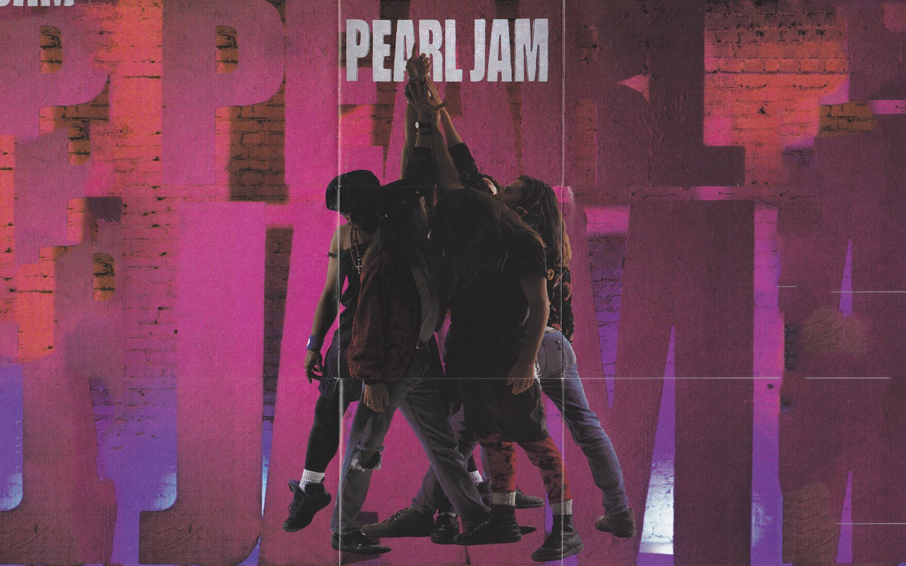
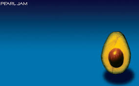

TEN
Ten is the debut studio album by American rock band Pearl Jam, released on August 27, 1991, through the record company Epic Records.

PEARL JAM (AVOCADO ALBUM)
Pearl Jam (sometimes referred to as The Avocado Album or simply Avocado) is the eighth studio album by American alternative rock band Pearl Jam, released on May 2, 2006 on J Records.